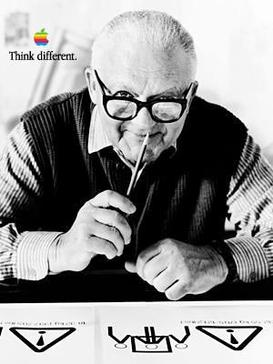

How did the life of Paul Rand change corporate branding ideas in America?
Introduction
In 1914, the movement dubbed ‘The Modern Movement in America’ was struggling to gain foothold in the design culture of America. The Armory Show had its first exhibition the year before, and graphic design was largely demonstrated by photography and traditional illustration, Magazine and print visuals were also stale, trying to cater exclusively to an upper middle class audience.
Also in 1914, Peretz Rosenbaum was born in Brooklyn, New York. Over a career spanning 7 decades, he would become pioneer of not only corporate branding, but magazine cover design and photography expert.
Peretz Rosenbaum believed so strongly in corporate identity he paved the way for designers in the 1950s and 1960s, by gaining a large amount of work and respect from large corporations such as IBM. Graphics became a tool to corporations, a voice between the ideas of the company and the visuals of the public.
Corporations previous to Peretz Rosenbaum’s influence, used overly complicated, non-sensical designs. Peretz Rosenbaum was a believer in simplicity, blank space and simple typefaces. He was so committed to these beliefs, he shortened his Jewish name Peretz Rosenbaum to Paul Rand, a decision made to fit in with the ‘Madison Avenue’ culture in New York.
This essay will explore the life of Paul Rand, but specifically his large influences on extremely well known companies, such as IBM, UPS, Apple and Yale. This is due to my belief that because Rand was able to contribute to the design of so many well knowm companies, he was a true pioneer of the Swiss Style, at a time the fresh movement was reaching America, and a great, passionate salesman of his technique.
The Early Years
At a young age Rand was painting signs for his fathers grocery store and for school events (I believe doing this from a young age pushed him towards the advertising path of graphic design). While attending High School Rand attended night classes at Pratt Institute, a non-profit, higher education institute, primarily known for its architecture, design and industrial classes.
Between 1932-1935 he also attended Parsons The New School for Design and the Art Students League of New York. During this time I believe he learnt about the new Swiss Style of Graphic Design. Swiss Design was also called the International Typographic Style, and began emerging in the 1920’s in Germany, but did not reach full potential until developed by the Swiss in the 1950’s.
This style place large emphasis on, nothing. Nothing in terms of letting blank space, direct imagery, type, and legibility of information, dominate the work. Although the primary format for Swiss Style was poster form, Rand appreciated the simplicity but effectiveness of this work, and adapted them to his corporation work. He considered the basis of what the client needed, what the client could do without, and designed a level of simplicity to suit that individual brands needs. Rand admired Swiss Expressionist Paul Klee for a similar approach of functionality to his paintings. Klee was a painter influenced by expressionism and cubism, and had a ‘bare bones’, simplistic approach to his work, which was truly individual. Klee often stripped down the subject of his paintings down to their critical masses, such as planes, shapes, colours, and just worked with those elements. Rand similarly worked with his corporate logos, stripped down a lot of what the companies were, and just worked with the bare elements.
However before focusing work on corporate branding, he went from his education to publishing work. His career began at a part time position, creating stock images for a syndicate that produced these stock images for various graphic companies and newspapers. Stock Photographs are images licensed to use for a certain purpose, for example the background of text, or in headers, and companies pay stock image companies to use them. It means the stock companies can sell images under various different licenses and can often resell and image, and the newspaper company doesn’t have to worry about taking the image themselves. This would have been vital experience working this type of career for Rand to get into branding, as he would have had to take and develop photographs based on clients requests and needs, and Rand would have developed experience working for a large receipt audience, such as a newspapers customers.
Rand was meanwhile working on a portfolio while producing the stock images, and his work was getting discovered at a rapid pace, leading to a push into direct magazine work. His talent for developing lack lustre photographs into dynamic layouts and spreads caught the attention of Apparel Arts (GQ) magazine in 1936, who asked him to organise the layout of the anniversary edition of the magazine, to which he declined, feeling he was too young and inexperienced for the job. A year later however he took the job, and revamped the corporate style of Apparel Arts page layouts, contributing to their style until 1941. Despite being such a young, fresh designer, his work was creating so much noise during the 1930’s, extremely popular magazines such as Apparel Arts were willing to take the risk with his work.

Corporate Branding
In 1956, Rand was approached by IBM to recreate their logo after a death within the company lead to a changeover in IBM’s chairman, Tom Watson Jr, succeeding Thomas J Watson Sr. Rand was therefore tasked to rebrand the company, as they were signifying a new era. The logo was changed to create a more bold approach, something more solid and created more of a statement than the previous hollow logo, yet remained classy and simple. Rand was recommission by IBM in 1972 to create a new version of the logo, basing it on the rapid development of IBM’s new systems, such as the 360 in 1969. To achieve this, Rand replaced the solid block letters with horizontal stripes, to create speed, and movement, like IBM’s development. Over the remaining quarter of the century, the logo remained the same. This is arguably one of the greatest logos ever created, as to this day the logo has remained the same principle. To have such a great understanding of your clients needs and virtues, that you can create a logo that lasts almost 50 years later unchanged, shows how incredibly advanced Rand was in his designs and his perfect, simplistic style is largely admired to this day, as to put it simply, it hasn’t been beaten.

Paul continued his corporate image work throughout these years, creating logos and packing for many popular companies such as Ford, UPS, Westinghouse, ABC and Enron.
Despite ageing, he remained vital the corporate graphic design, and was commissioned by Steve Jobs in 1986 to create a logo for the NeXT computers (Rand at the time being 72 years old). Jobs needed a visually identity for the company, and due to Rand’s large experience with high end company’s, believed he was the right designer for the job. Rand was heavily into explaining his work, making the client believe in it, which explains why the many large corporations accepted his work and displayed it, he was a great salesman of his process. The Book was a combination of Rand’s research into a the company, and a step by step creation of the logo. Jobs was taken aback with Rand’s approach, as he stated in an interview one time “I asked him if he would come up with a few options, and he said, ‘No, I will solve your problem for you and you will pay me. You don’t have to use the solution. If you want options go talk to other people.’” Jobs labelled Rand ‘The Greatest Living Graphic Designer’ prior to Rand’s death in 1996.
Conclusion
Paul Rand, to this day, remains a great influencer in corporate branding and imagery. He was a great influence in the 1950’s and 1960’s, described by graphic designer Louis Danziger
‘He almost singlehandedly convinced business that design was an effective tool. Anyone designing in the 1950s and 1960s owed much to Rand, who largely made it possible for us to work. He more than anyone else made the profession reputable. We went from being commercial artists to being graphic designers largely on his merits’
Rand was highly commemorated by a design legend such as Steve Jobs, showing that his work was on such a high standard that the owner of a billion dollar company, creator of the iphone, the iPod and Mac computer systems. For Steve Jobs to recognise the achievements and though process of a designer such as Rand, for me means that he was truly someone remarkable.
Rand’s work is still visible today and in use by companies such as IBM, UPS and Westinghouse, showing that Rand successfully influenced and changed corporate branding, particularly in America, as his work has successfully stood the test of time almost 60 years lately. I strongly believe that Rand advanced corporate branding largely into the future, due to the fact that so many large brands can trace their imagery back to him, and that it is still recognisable to this day.
References
- Books
- Fiell, Charlotte & Petter - The Story of Design (2018 Edition) - Pages 353,358
- Meggs, Philip B - A history of Graphic Design (1998 Third Edition) - Pages 337,388
- Cold Type
- Autologic
- Berthold
- Compugraphic
- Hell AG
- Monotype
- Digital Type
- Linotype
- URW++
- Monotype
- Bitstream